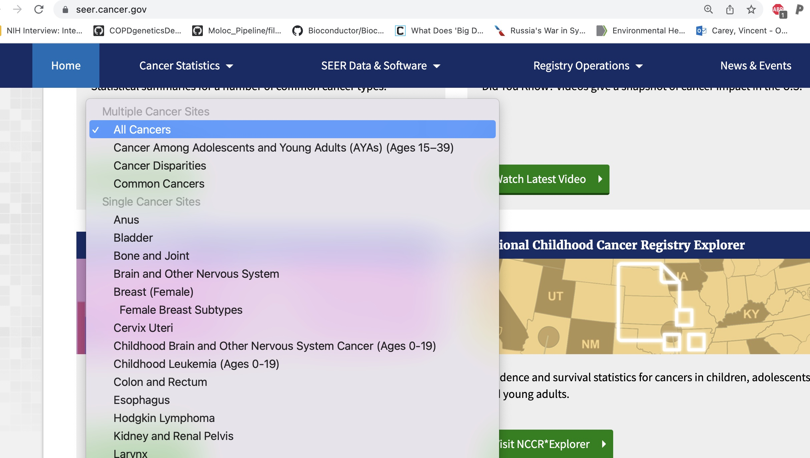
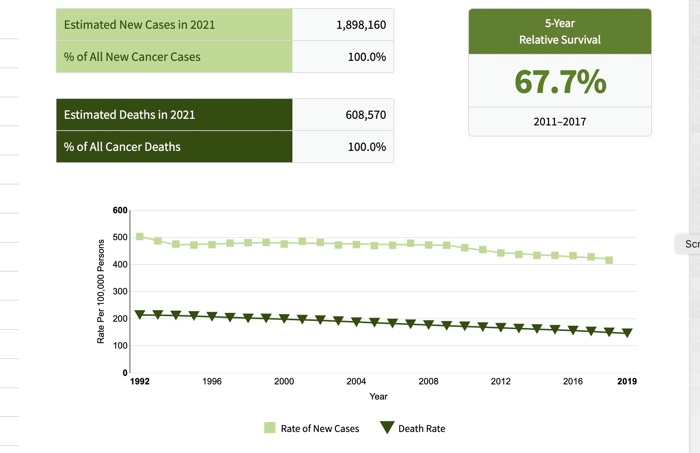
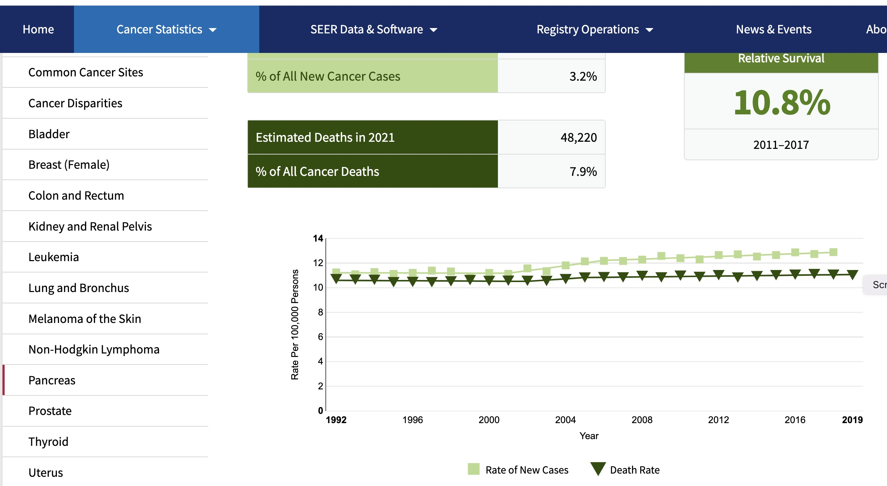
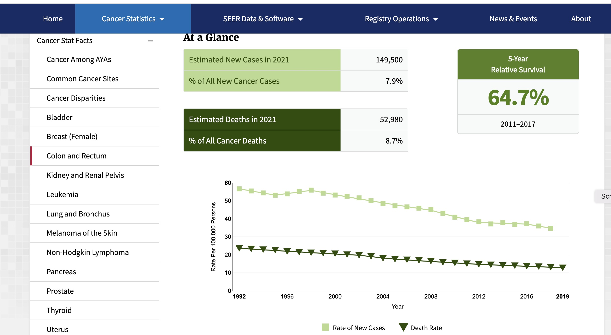

A2 Cancer rates for public health assessment
Vincent J. Carey, stvjc at channing.harvard.edu
May 22, 2026
Source:vignettes/A2_rates.Rmd
A2_rates.Rmd## Warning: multiple methods tables found for 'scale'## Warning: replacing previous import 'BiocGenerics::scale' by
## 'DelayedArray::scale' when loading 'SummarizedExperiment'Cancer rates and public health
Motivations for studying cancer at the population level are detailed on a National Cancer Institute web page.
Briefly, cancers contribute to
- years of life lost
- loss of quality of life for patients and families
- lost productivity
Furthermore, as the population ages, the effects of cancer will be more pronounced as time goes on.
Although cancer affects individual patients and their families in different ways, studying its impact on large populations can provide important information that influences practices, policies, and programs that directly affect the health of millions of people in the United States each year. – from the NCI web page
This idea of “studying [cancer’s] impact on large populations” brings us immediately to data science and statistics.
Two terms of epidemiology will be of use to us
- prevalence: the proportion of the population currently affected by a disease
- incidence: the proportion of the population, in a given time interval, that was disease-free prior to the interval but developed the disease within the interval
Prevalence expresses the current burden of disease within a population.
Incidence expresses the rapidity with which a disease grows in a population.
For a more detailed discussion of these terms, check this CDC site.
An excellent resource on rate estimation and interpretation is the online book on cancer screening by Pamela Marcus, hosted at NCI.
Collecting cancer data
The role of statistics in our lives has intensified with the COVID-19 pandemic.
Policymakers have proposed that personal protective behaviors and legal obligations to mask or avoid traveling can change depending on the “infection rates” in localities.
Cancer Registries are systems managed at the state level that collect information on cancers as they are identified by health care providers.
“SEER” stands for Surveillance, Epidemiology and End Results. It is a program developed at the National Institutes of Health (NIH) National Cancer Institute (NCI). Data are collected at 17 regional centers.
The SEER web site, offers various facets of cancer data to investigate.

SEERlist
New diagnoses, and deaths, over time
A very broad overview of cancer’s impact on Americans over the past 20 years:

SEER overview, 2021
A view of pancreatic cancer incidence
We can “drill down” on specific cancer types using the drop-down menu at seer.cancer.gov. For cancer of the pancreas we have:

SEER pancreas, 2021
A view of colorectal cancer incidence
For cancer of the colon or rectum we have:

SEER colon and rectum, 2021
Exercises
A.2.3 Which of the following describes observations on pancreatic cancer between 1992 and 2019?
- the death rate per 100000 population increased by two,
- the rate of new pancreatic cancers per 100000 population increased by two,
- the rate of new pancreatic cancers per 100000 population remained stable.
A.2.4 True or false: The death rate, and the incidence rate, for cancers of colon and rectum were approximately halved in the interval between 1992 and 2019.